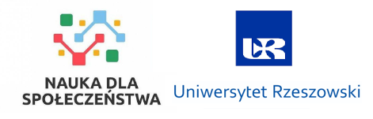

Autorzy: Jan Kowalski, Anna Nowak, Piotr Wiśniewski
Projekt powstał w ramach projektu naukowego...

Aplikacja mobilna powstała w ramach projektu naukowego pt.: INTERNETOWY SERWIS EDUKACJI OBYWATELSKIEJ – platforma współpracy nauki ze społeczeństwem, NdS/551978/2022/2022, finansowanego w drodze
konkursu na realizację projektów w ramach programu pod nazwą „Nauka dla Społeczeństwa”, ogłoszonego
komunikatem Ministra Edukacji i Nauki z dnia 1 lipca 2021 r. o ustanowieniu programu pod nazwą
„Nauka dla Społeczeństwa” i naborze wniosków zmienionego komunikatem Ministra Edukacji i Nauki
z dnia 12 października 2021 r. o zmianie komunikatu o ustanowieniu programu „Nauka dla Społeczeństwa”
i naborze wniosków, w związku z art. 376 ust. 1 i ust. 2 pkt 1 ustawy z dnia 20 lipca 2018 r. – Prawo
o szkolnictwie wyższym i nauce (Dz.U. z 2021 r. poz. 478 z późn. zm.)
Autorzy: Jan Kowalski, Anna Nowak, Piotr Wiśniewski